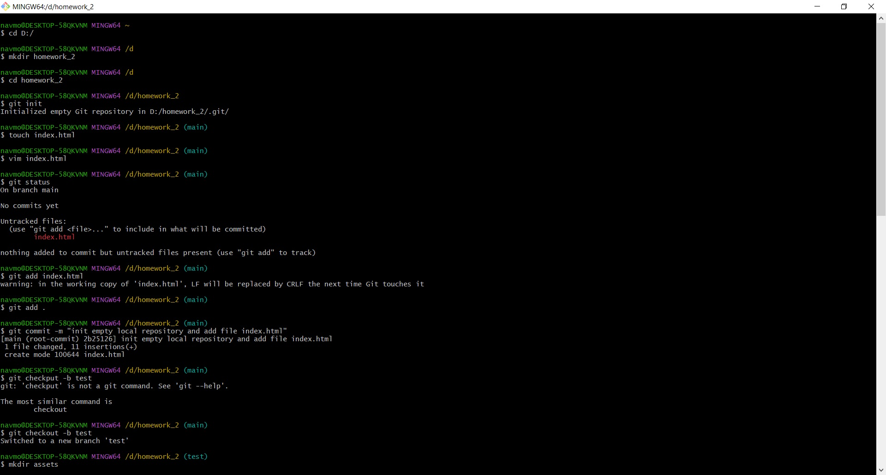
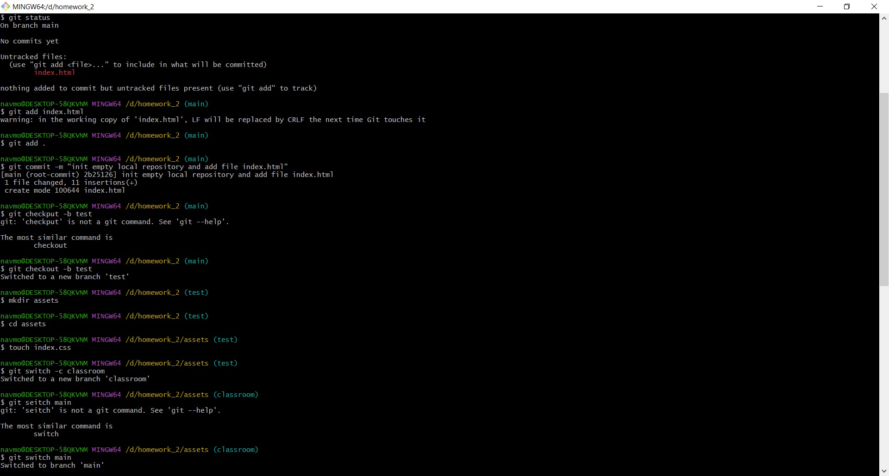
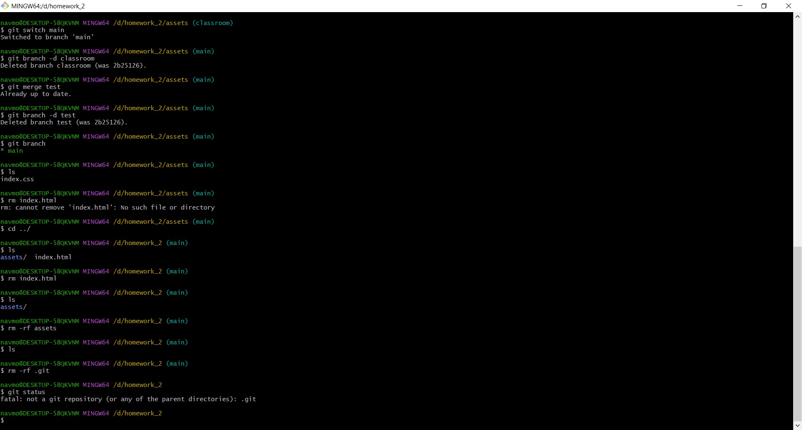
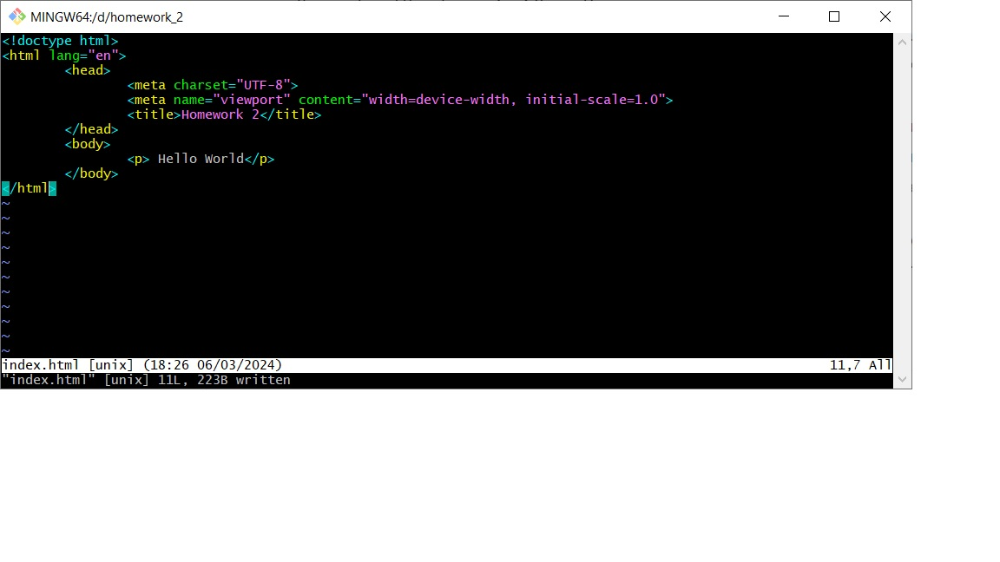

HomeWork 2

Перемістився в кореневий каталог диска D
створив папку HOMEWORK і ввійшов в середину папки
створив пустий репозиторій
створив файл index.html
за допомогою редактора VIM в режимі командного рядка
вніс та зберіг дані в файл (скриншот додано)
закомітив зміни в репозиторій
створив та одразу перейшов на гілку TEST
створив на гілці TEST папку ASSETS

перший і другий скриншот на половину перекривають дані
історії тому для перегляду продовження історії виконання команд нова інформація
починається з середину скриншоту і прямує до низу
В папці ASSETS створив файл index.css
створив та перейшов на гілку CLASSROOM
повернувся до гілки MAIN

Видалив гілку CLASSROOM
гілку TEST об'єднав з гілкою MAIN
видалив гілку TEST
переглядав вміст папок
почергово видалив всі папки і файли які були створені
видалив репозиторій
за допомогою команди GIT STATUS впевнився в тому, що репозиторій видалено

Містить довільну інформацію, яку я вводив за
допомого редактора командного рядка VIM